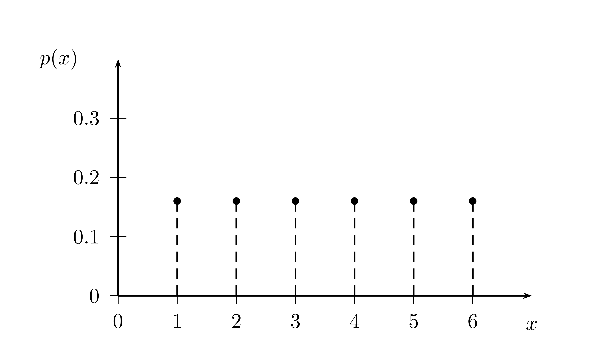
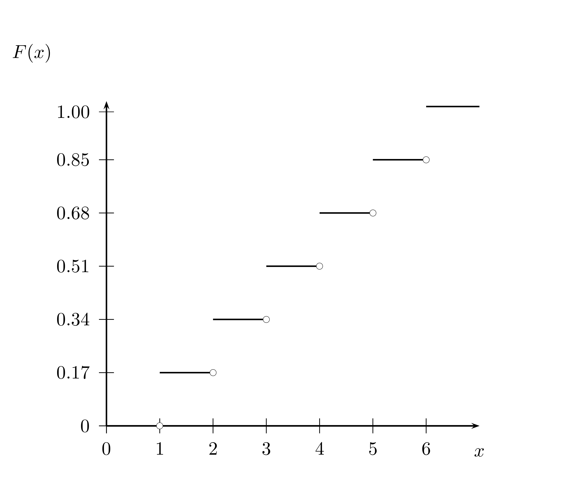
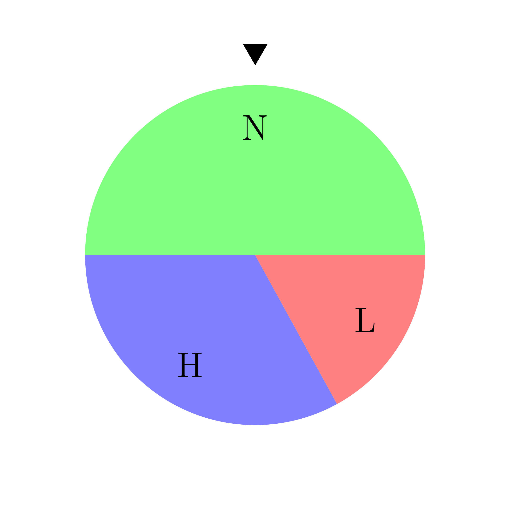

Chapter 4 Random Variables
4.1 Discrete Distributions
We now come to an extension of the simple probability model which is very useful. This is the concept of a random variable. We have implicitly already used this concept with our virtual dice and in our example and project on investing and updating believes.
Let \({\cal S}\) be some finite set - a sample space - and \(P(x)\) a probability on \({\cal S}\). A random variable is a function assigning numbers to points of \({\cal S}\). The notation \({\cal S}\) has been chosen deliberately to connect this lecture with the previous ones. So we get the following definition
- Random variable
- A random variable is a function defined on the sample space.
The term random variable might be slightly confusing, for what is really meant is something like a random function where the range is the sample space, i.e. the outcome of a random experiment, and the image is the set of real numbers.
Think of the payoff promise in the investment game, we analyzed in lecture 3. The sample space for the flip of a coin is the set \({\cal S}=\{H, T\}\). They payoff for a player who has won the auction for a flip is: 2, if the coin lands on heads, 0 if the coin lands on tails. This uncertain payoff promise can be formalized as a function from \({\cal S}\) to \(\{2,0\}\), with the rule that H is mapped to 2 and T is mapped to 0.
It is a widely held convention in probability theory to denote random variables by capital letters, like \(X\) and \(Y\) and their values are denoted by \(x\) and \(y\) respectively.
Let \(X\) be a random variable and let \(x_1, x_2, \dots , x_n\) denote the values it can assume. The aggregate of all sample points on which \(X\) assumes the fixed value \(X = x_j\) forms the event that \(X = x_j\). Its probability is denoted by \(P(X = x_j)\).
When a random variable can only take finitely many or uncountably many values, i.e. when the sample space contains only finitely many or uncountably many basic outcomes, we say that the random variable is discrete.
- Probability distribution
- The function \(P(X = x_j) = p(x_j)\) for \(j = 1, \cdots ,n\) is called the (probability) distribution of the random variable \(X\).
This function completely describes the probability properties of the random variable. Note that \(p(x_j) \geq 0\) and \(\sum_{j=1}^n p(x_j) = 1\).
A related concept is found in the follwing important definition
- Cumulative distribution
- The cumulative distribution function - abbreviated CDF - shows the probability that a random variable \(X\) take a value less than or equal to a given value \(x\). It is usually denoted as \(F(x) = P(x \leq x)\) where \(-\infty < x < \infty\).
We have actually already encountered a random variable in our very first lecture, where we discussed the six sided fair die. The random variable \(X\) is in this case a map (the identity map) from the six basic outcomes \({\cal S}=\{1,2,3,4,5,6\}\) to the number of points \(\{1,2,3,4,5\}\). If the die is fair, each of these outcomes has probability \(1/6\).
It is common to display the probabilities associated with a random variables, graphically as a probability distribution.

Figure 4.1: The probability distribution of the random variable of rolling a six sided die

Figure 4.2: The cumulative distribution function of the random variable of rolling a six sided die
The notion of a distribution can be generalized to more than one random variable. Consider two random variables \(X\) and \(Y\), defined on the same sample space \({\cal S}\). Denote the values they assume by \(x_1, x_2, x_3, ..., x_n\) and \(y_1, y_2, y_3, ..., y_m\) respectively. Let the corresponding distributions be \(f(x_i)\) and \(g(y_j)\).
The aggregate points in which the two conditions \(X = x_i\) and \(Y = y_j\) are satisfied form an event whose probability is denoted by \(P(X = x_i, Y = y_j\))
- Joint probability function
- The function \[\begin{eqnarray*} P(X = x_i, Y = y_j) = p(x_i, y_j), \quad i = 1, \cdots, n \,\, j = 1, \cdots, m \end{eqnarray*}\] is called the **joint probability distribution of \(X\) and \(Y\).
Note that we must have \[\begin{eqnarray*} p(x_i, y_j) &\geq& 0, \quad i = 1, \cdots, n \,\, j = 1, \cdots, m \\ \sum_{i=1}^n \sum_{j = 1}^m p(x_i, x_j) &=& 1 \end{eqnarray*}\]
Moreover for every fixed \(i\) and for every fixed \(j\) we have: \[\begin{eqnarray*} p(x_i, y_1) + p(x_i, y_2) + \cdots + p(x_i, y_m)&=&P(X = x_i)&=&f(x_i)\\ p(x_1, y_j) + p(x_2, y_j) + \cdots + p(x_n, y_j)&=&P(Y = y_j)&=&g(x_j) \end{eqnarray*}\]
If you go back to lecture 3, where we discussed conditional probability, this should look very familiar. These notions carry over to the concepts of random variables. With the notion of a joint probability we also get a notion of conditional probability for random variables:
- Conditional probability
- The conditional probability of the event \(Y = y_j\) given that \(X = x_i\) is \[\begin{equation*} P(Y = y_j | X = x_i) = \frac{p(x_i, y_l)}{f(x_i)} \end{equation*}\] where we need to require that \(f(x_i) > 0\).
With this definition, a number is associated with every value of \(X\) and so conditional probability defines a function of \(X\). This function is called the conditional distribution of \(Y\) for given \(X\).
- Mutually independent
- Two random variables are called mutually independent if for any combination of values \(x_1, ..., x_n\), \(y_1, ..., y_m\) \begin{equation*} P(X = x_i, Y = y_j) = P(X = x_i) P(Y = y_j)
4.2 Expected value
Sometimes the entire probability distribution is difficult to grasp at once. It is common to describe probability distributions therefore by a summary measure. Among the typical summary measures the expectation or the mean is by far the most important one.
- Expected Value
- The expected value \(\mathrm{E}(X)\) of a discrete random variable \(X\) is the probability weighted sum of all its possible values: \[\begin{equation*} \mathrm{E}(X) = x_1p(x_1) + x_2 p(x_2) + \cdots + x_n p(x_n) \end{equation*}\] Note that in the definition we have covered the case where the number of possible outcomes is finite. In the other case where the number of possible outcomes is countably infinite we need additional convergence conditions for the infinite series defined by the sum of the \(x_i p(x_i)\). We ignore this case here.
The term expected value can be a bit misleading, for it might suggest that the expected value is something we “expect” to occur. It is - to the contrary - pretty often unlikely and sometimes even impossible.
As an example, remember our fair die. Its expected value is, if you apply the definition above:
1*1/6+2*1/6+3*1/6+4*1/6+5*1/6+6*1/6## [1] 3.5a value that will never actually come up.
4.2.1 Properties of expected value
Property 1: Adding or subtracting a constant: Let \(X\) be a random variable and you add a constant \(a\) then \(\mathrm{E}(X \pm a) = \mathrm{E}(X) + a\)
This is almost immediate from the definition, because you can split the probability weighted sum of \(X + a\) into a probability weighted sum of \(X\) plus a probability weighted sum of \(a\). For the term involving \(a\), you can factor out \(a\) and since the probabilities sum to 1 we have the formula.
Property 2: Multiplying by a constant: If \(X\) is a random variable and \(a\) is a constant, then \(\mathrm{E}(a X) = a \mathrm{E}(X)\).
Property 3: Transformation by a function If \(X\) is a random variable, then any function \(f(x)\) defines a new random \(f(X)\) and \[\begin{equation*} \mathrm{E}(f(X)) = f(x_1) p(x_1) + f(x_2) p(x_2) + \cdots + f(x_n) p(x_n) \end{equation*}\]
Property 4: Linearity of expected value if \(X\) and \(Y\) are random variables and \(a\) and \(b\) are constants, then \[\begin{equation*} \mathrm{E}(a X + b Y) = a \mathrm{E}(X) + b \mathrm{E}(Y) \end{equation*}\]
To see this, we can write \(\mathrm{E}(a X) + \mathrm{E}(b Y)\) by Property 2 as \(a \mathrm{E}(X) + b \mathrm{E}(Y)\) which is by definition \[\begin{equation*} a \sum_{i=1}^n \sum_{j = 1}^m x_i p(x_i, y_j) + b \sum_{i=1}^n \sum_{j = 1}^m y_j p(x_i, y_j) \end{equation*}\] Rearranging gives: \[\begin{equation*} \sum_{i=1}^n \sum_{j = 1}^m (a x_i + b y_j) \end{equation*}\] which is \(\mathrm{E}(aX + bY)\).
4.3 Variation
While the expected value of a random variable provides a very useful summary measure for a distribution, we typically also want information about the amount of variation of a a random variable. One such measure, which gives us a degree of possible deviation from the mean is the variance.
- Variance
- The variance of a random variable \(X\) is the expected value of the squared deviation from the expected value of \(X\) or \(Var[X] = \mathrm{E}[(X -\mathrm{E}[X])^2]\)
Note that we cab simplify the expression for the variance as follows: \[\begin{align*} \mathrm{E}((X-\mathrm{E}(X)^2)) & = \mathrm{E}(X^2 - 2 X \mathrm{E}(X) + \mathrm{E}(X)^2) \\ & = \mathrm{E}(X^2) - 2 \mathrm{E}(X)\mathrm{E}(X) + \mathrm{E}(X)^2 \\ & = \mathrm{E}(X^2) - \mathrm{E}(X)^2 \end{align*}\]
In the case of a discrete random variable, the case we discuss in this lecture, we have \(\mathrm{Var}(X) = \sum_{i=1}^{n} \left(x_i - \mathrm{E}(X) \right)^2 p(x_i))\).
Note that the units of the variance are the squared units of the random variable. This is often not very useful for interpretations. This leads us to the concept of a standard deviation:
- Standard Deviation
- The standard deviation of a random variable \(X\) is the square root of the variance of \(X\), denoted \(\mathrm{SD}(X) = \sqrt{\mathrm{Var}(X)}\).
Let’s discuss a few properties of the variance.
Property 1: If \(X\) is a random variable and \(c\) is a constant, then \[\begin{equation*} \mathrm{Var}(c X) = c^2 \mathrm{Var}(X) \end{equation*}\] You could try to prove this equation, just using the definition of variance and the properties of expected value. We do not go into these details here but this property should make sense to you. If we multiply a random variable by say 3, its average squared distance from its mean should increase by a factor of 9.
Property 2: If \(X\) is a random variable and \(d\) is a constant \[\begin{equation*} \mathrm{Var}(X + d) = \mathrm{Var}(X) \end{equation*}\]
Shifting over a random variable by a constant does not alter the variance. This should make sense, since the variance of a constant must be 0. Why? Lets use the definition: \[\begin{equation*} \mathrm{Var}(d)= \mathrm{E}(d^2) - \mathrm{E}(d)^2 = d^2 - d^2 = 0 \end{equation*}\] This should be clear, after all a constant never varies.
Assume we have two random variables \(X\) and \(Y\) then we define their covariance as follows.
- Covariance
- The ++covariance** for two random variables \(X\) and \(Y\), is defined as \[\begin{equation*} \mathrm{Cov}(X,Y) = \mathrm{E}((X - \mathrm{E}(X))(Y-\mathrm{E}(Y))) \end{equation*}\]
Note that \(\mathrm{Cov}(X,Y) = \mathrm{E}(XY) - \mathrm{E}(X)\mathrm{E}(Y)\). If \(X\) and \(Y\) are independent, then \(\mathrm{E}(XY) = \mathrm{E}(X)\mathrm{E}(Y)\), hence if \(X\) and \(Y\) are independent, \(\mathrm{Cov}(X,Y) = 0\). Note, however, that the converse is not true. A covariance of 0 does not imply independence.
The choice of an origin and unit of measurement of a random variable is to a large degree arbitrary. It is thus often most convenient to take the mean as the origin and the standard deviation as unit. Denote the mean of a random variable \(X\) as \(\mu\) and the variance as \(\sigma^2\). In this case \(X-\mu\) has mean zero and variance \(\sigma^2\), and hence the variable \(X^* = \frac{(X-\mu)}{\sigma}\) has mean 0 and variance 1. If we take the covariance of two such normalized random variables we get the so called correlation coefficient \(\rho(X,Y)\).
- Correlation Coefficient
- The correlation coefficient of two random variables \(X\) and \(Y\) is defined as \[\begin{equation*} \rho(X,Y) = \mathrm{Cov}(X^*,Y^*) = \frac{\mathrm{Cov}(X,Y)}{\sigma_x \sigma_y} \end{equation*}\]
The correlation coefficient is thus just a particular way of writing the covariance.
Now this was a bit of a large theory junk. It is time we get back to R and play around with these concepts a bit. As a finance class you should be motivated to know these concepts well because they are a sort of cap-stone for investment science and portfolio management.
Indeed random variables are the most important models in Finance. In the next example we will study the concepts of this section by putting them in a Finance context. In doing so we will also embark into a new territory of R. We will now also learn the basics of writing R programs using portfolio and investment theory as an example.
4.4 Random variables, expected value, variance and covariance: The cornerstone for modeling investments under uncertainty
An important case where probability is applied in Finance is the problem of analyzing risky investment decisions: When you make an investment with a known initial outlay of capital the amount to be returned from the investment in the future is unknown. In some cases, say when you invest in very liquid assets classes which are constantly traded on markets, like stocks and bonds, you might have an idea on the probability of certain return prospects for investment informed by past data. This case of random returns is one of the most intensively used applications of probability to Finance. Since random variables are the models of choice in this case, we study such an investment problem now.
It is at the same time an ideal examles to push the frontier of your knowledge of R, because we can discuss in this context how to write programs and run more complex simulations than we did so far.
Let us focus first on a class of investment problems where we only have a single investment period: Money is invested at an initial time and a payoff is attained at the end of this period. Random variables are a concept that allows us to construct models for thinking about and analyzing the uncertainty inherent in such practical situation. While the assumption of a single period is an idealization that does not apply to public stocks such models are applied to this common class of investments as a simplification. For other situations the one period model is sometimes a pretty good approximation. Think of a zero-coupon bond that will be held to maturity. Or think about an investment in a physical project that only will yield a payoff when completed.
These kinds of simplifications are - by the way - a cornerstone in modelling as well as in programming. We build solutions to complex problems by starting with a simple problem and then buid complexity step by step.
4.4.1 Asset Return
Before we dive into the modelling of investment problems with uncertainty using probability and random variables as a tool, we need to introduce some financial concepts first: An investment instrument that can be bought and sold is called an asset in Finance. If \(X_0\) is the amount invested today and \(X_1\) is the amount received “tomorrow,” say for example in a year from now, the total return is defined as the ratio of the amount received to the amount invested or formally \(R = \frac{X_1}{X_0}\). Often we simply use the term return. The rate of return is defined as the difference between the amount received and the amount invested in relation to the amount invested or \(r = \frac{X_1-X_0}{X_0}\). Often people also speak of return when they refer to the rate of return. Both notions are related by the equation \(R = 1+r\) and the equation for the rate of return can be rewritten as \(X_1 = (1+r)X_0\). This shows that the rate of return acts much like an interest rate.
When an asset is initially acquired, its rate of return is uncertain. Modelling the rate of return as a random variable is one possibility to describe and analyze this situation of uncertain returns.
4.5 Random returns
We are now going to build a model of random returns that we can use to simulate the payoff consequences of portfolio investment decisions as well as for giving a concrete context to the abstract notions we introduced before. This will show you their power as well as their practical relevance in Finance.
How do actual returns look like? Let’s go back to the example of the S&P 500 - a broad stock market index - we discussed before.
sp500 <- tq_get("^GSPC", get = "stock.prices", from = "2011-01-03", to = "2021-12-22")
head(sp500, n = 5)## # A tibble: 5 x 8
## symbol date open high low close volume adjusted
## <chr> <date> <dbl> <dbl> <dbl> <dbl> <dbl> <dbl>
## 1 ^GSPC 2011-01-03 1258. 1276. 1258. 1272. 4286670000 1272.
## 2 ^GSPC 2011-01-04 1273. 1274. 1263. 1270. 4796420000 1270.
## 3 ^GSPC 2011-01-05 1269. 1278. 1265. 1277. 4764920000 1277.
## 4 ^GSPC 2011-01-06 1276. 1278. 1270. 1274. 4844100000 1274.
## 5 ^GSPC 2011-01-07 1274. 1277. 1262. 1272. 4963110000 1272.Now let’s use R to add a column with daily returns based on the variable adjusted the adjusted
index value, which takes into account dividend payments and other things. Our knowldege of how
to manipulate R objects by subsetting rules and the application of functions is already there
from our lecture on conditional probability:
We add a column of first differences \(X_{t+1} - X_t\) for \(t \in \{2, \cdots ,2762\}\). We have to
start at the second row because for the first observation we have no previous observation to
deduct. Thus when we add a new column to the data frame we need a column of
equal length, so we put an NA in the beginning of the returns column. We then have to divide by \(X_t\) for \(t \in \{ 1,\cdots, 2761\}\) because for the last
observation we have no next observation to deduct the last one from and divide by it.
Remember that we can refer to elements in an R object by indexing with numbers. If we apply
the length()function to an object we get the number of components and thus the number of the
last element in an object. This we drop. The first difference we already know how to deal with. So let’s
add returns
sp500$returns <- c(NA, (diff(sp500$adjusted, lag = 1)/sp500$adjusted[-length(sp500$adjusted)]))Now it is always a good idea when you write complex commands like this to check whether the code
is doing what you want. The second and the first value of the adjustedvariable is:
1270.199951 and 1271.869995. Thus the return is
-0.0013131. The first value in our returns
variable is:
sp500$returns[2]## [1] -0.001313062This looks good. Now let us use our little graphical knowledge to look at the distribution of
returns in our data using the qplotfunction. We drop the NA and :
qplot(sp500$returns[-1], binwidth=0.01) This picture suggests that returns are pretty much distributed symmetrically around 0, and in
very rare cases rise and drop a bit more than 5 % per day.
This picture suggests that returns are pretty much distributed symmetrically around 0, and in
very rare cases rise and drop a bit more than 5 % per day.
Note that this is a histogram, which means that we binned the return data into buckets of 1 % and plotted it. It would be natural to assume a continuous sample space for modeling returns. We will discuss such models in the next lecture.
Here we take a choice where we model randomness using discrete random variables. We do so by combining two random devices, constructed as a wheel of fortune. Both kinds of wheels are useful for the study of investments. Our wheel of fortune looks like this:
Figure 4.3: A wheel of fortune. If the wheel stops at the segment under the marker your payoff is determined according to the rules of the game
If you invest an amount of money in the wheel, your payoff will be determined according to the rules of the game depending which segment ends up under the marker (the triangle above the wheel). The wheel is constructed such that it stops at segment \(N\) with probability \(\frac{1}{2}\), it stops at \(H\) with probability \(\frac{1}{3}\) and at \(L\) with probability \(\frac{1}{6}\).
There is another random device, before the wheel is spun, which is a coin, which is flipped and ends up on \(B\) (for boom) with probability \(\frac{3}{5}\) or \(R\) (for recession) with probability \(\frac{2}{5}\).
This creates in total 6 outcomes \({\cal S} = \{BN, BH, BL, RN, RH, RL\}\) with probabilities \(p(x) = \{0.3, 0.2, 0.1, 0.2, 0.13, 0.07\}\).
In this game you have some initial wealth, which you may invest into 3 alternative assets. They have a payoff-structure described in the following tables:
If the coin lands on \(B\):
| Wheel | Asset 1 | Asset 2 | Asset 3 |
|---|---|---|---|
| H | 1 | 10 | 6 |
| N | 1 | 6 | 5 |
| L | 1 | 2 | 4 |
If the coin lands on \(R\):
| Wheel | Asset 1 | Asset 2 | Asset 3 |
|---|---|---|---|
| H | 1 | 5 | 3 |
| N | 1 | 3 | 2.5 |
| L | 0 | 1 | 2 |
You can allocate your wealth between the three assets and have to pay the following prices per unit \(q = \{0.93, 5.86, 4.625 \}\). You can not invest more than your initial wealth of 1000. You can neither sell nor short sell any of the assets.
You may think of these assets as a bond an two stocks. Asset 1, the bond, pays a fixed amount in each state, except when things go very bad and it defaults and pays nothing. Asset 2 and Asset 3 could be thought of as two stocks where Asset 2 has a higher variation in its payments across states. These are the rules of the game.
Now here is the programming challenge we undertake in several steps: We build a function that
randomly chooses an outcome according to the probabilities we have specified and then
determine the payoff of each asset according to the rules of the game. When we are finished
with this step it will look something like this: When you give your portfolio to the outcome()
function you will get the state, the payoff of the different assets and the return.
outcome(portfolio)
The first step in this program, you already know from previous lectures. Let us call
this function get_state(). We have to randomly draw a state by flipping the coin and
spinning the wheel, just as we rolled the dice in lecture 1:
get_state <- function(){
coin <- c("B", "R")
wheel <- c("H", "N", "L")
state <- c(sample(coin, size = 1, replace = T, prob = c(3/5, 2/5)),
sample(wheel, size = 1, replace = T, prob = c(1/3, 1/2, 1/6))) |>
paste(collapse = "")
return(state)
}In this program, we have created inside the function a coin and a wheel, determined a state vector
by sampling form the coin and the wheel according to our probabilities and then concatenate the
two draws - the two strings - by using the paste() function. Here we have used R’s pipe
operator |>, which channels the output of c() into the paste()function as an argument. Use
the help menu to check how it works in detail.
We can now use get_stateto flip the coin and spin the wheel to generate a state of the world:
get_state()## [1] "BN"The monetary value of the outcome depends on the portfolio of assets you have chosen.
We write a program to compute the payoff and save it as a function, so fir instance, if we get
payoff("RH", portfolio) will output the payoffs and returns or the portfolio you have chosen.
After that the full portfolio simulator will look something like this
outcome <- function(portfolio){
state <- get_state()
print(state)
payoff(state, portfolio)
}The print() function prints output to the console window, and allows us to display
messages from within the body of a function.
Note that in lecture 1 we showed and encouraged you to write all of your R code in an R script, a text file where you can compose your code. This will become very important as you work through this part of lecture 4. Remember that you can open an R script in RStudio by going to the menu bar and clicking on File > New File > R Script.
4.5.1 A strategy for writing a program
A coding task like writing a function to determine the random outcome of an investment decision is a complex task. Such a task can be tackled best, by using a fairly simple strategy:
- Break complex tasks into simple sub-tasks
- Use concrete examples for testing
- Describe your solution first in words or a picture before you convert it into code.
A program is a step by step instruction to your computer to perform certain tasks. All instructions together will accomplish something sophisticated, but taken apart, each single step will likely to be straightforward.
Writing a program is easier when you break it into sub-tasks and work on them separately first. R programs contain typically two types of subtasks, sequential steps and parallel cases.
The sequential steps we have already identified. We give the portfolio to the function, it draws a state, displays the result and then computes the portfolio payoff and the return.
Parallel cases occur when there are groups of similar processes within a task. Some tasks also require different algorithms for different kinds of input. If you can find these groups, you can work out the algorithms one at a time.
For example, payoff() will need to compute the portfolio payoff and the return, depending
on the state. In all cases in our example, though, the function will use the same
algorithm.
4.5.2 if Statements
When you have to link parallel cases together, the program faces a fork in its process whenever it has to choose between cases. If statements help the program to do so.
An if statememt in R tells R to do certain things for a particular case. The sytnax of telling R to do something if a case occurs is:
if (this) {
that
}So an example in our case would be:
if (state == "BH"){
print("BH")
}The condition in an if statement must evaluate to a single TRUEof FALSE. If statements
don’t have to be limited to a single line of code. Between the braces there can be
arbitrary lines.
if statements tell R what to do if a condition is true. But you can also tell R what to do if a condition is false. A simple code example would be:
if (this){
Plan A
} else {
Plan B
}If the case has more than two mutually exclusive cases, you can string multiple if and
else statements together by adding an if statement immediately after the else. R will
work then through if conditions until one evaluates to TRUE and then ignore the rest.
Now this suggests to handle the cases of different states for the portfolio like this:
if (state == "BN"){
return <- sum(c(1/q1 -1 ,10/q2 -1 ,6/q3 -1 )*portfolio)
} else if (state == "BH"){
return <- sum(c(1/q1 -1 ,6/q2 -1 ,5/q3 -1 )*portfolio)
} else if (state == "BL"){
return <- sum(c(1/q1 -1 ,2/q2 -1 ,4/q3 -1 )*portfolio)
} else if (state == "RN"){
return <- sum(c(1/q1 -1 ,3/q2 -1 ,2.5/q3 -1 )*portfolio)
} else if (state == "RH"){
return <- sum(c(0/q1 -1 ,1/q2 -1 , 2/q3 -1 )*portfolio)
} else if (state == "RL"){
return <- sum(c(0/q1 -1 ,1/q2 -1 , 2/q3 -1 )*portfolio)
}While this method works, it is for various reasons not very elegant.
The first unsatisfactory thing here is that the payoff numbers are hard coded into the if statement. if we would like to consider other examples, or different payoff structures, we would have to rewrite the entire if statement. This is tedious and prone to mistakes.
The second not so elegant thing about this code chunk is that we need to compose a multiplication and an addition for computing the payoff. It would be more efficient, if we could do this in a single operation.
Finally the cascade of if else statements is quite unwieldy and difficult to read. Maybe we can do better than that?
One way to address concern 1 would be to define portfolio payoffs and portfolios outside of the function as abstract objects, so our function will work with any payoff structure. The second concern can be addressed if we reveal the linear algebra nature of the problem and unleash R’s power to deal with linear algebra problems. The adress of the third concern, will lead us towards the concept of lookup tables.
The asset payoffs could be mathematically represented as a matrix, where the rows are the states and the columns are the assets. We might also add an extra column with prices to our matrix, so we have all the data
How do we specify the portfolio? We have an initial wealth and the wealth is invested into the three assets. We do not say anything here how the allocation is decided but once a decision has been taken, the portfolio will be a vector of weights \((w^1, w^2, w^3)\) with \(0 \leq w^i \leq 1\) for \(i = 1,2,3\).
load a portfolio of stocks compute returns create a vector of weights compute the mean return of the portfolio compute the variance of the portfolio discuss the magic of diversification feasible set feasible minimum variance set do this with real stock data
4.6 The Binomial Distribution and models of asset price dynamics
Explain Bernoulli trials Explain repeated Bernouli trials Show how these repeated Bernoulli trials or sums can be modeled by the binomial distribution use R for that Binomial
Luenberger p 296 - 299 until
4.7 Project: Credit risk model and independence based on Schönbucher
This can be constructed to apply the binomial distribution and discuss the importance of dependence. The modelling of dependence can be taken up in the last project